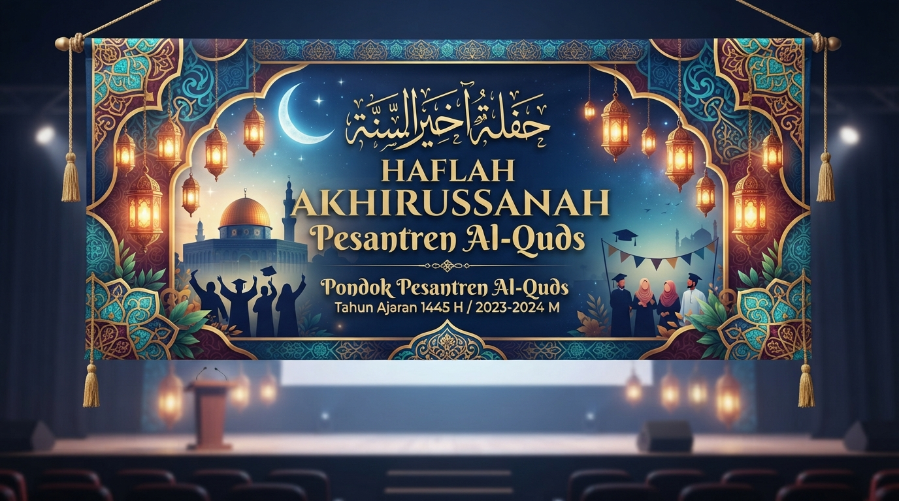
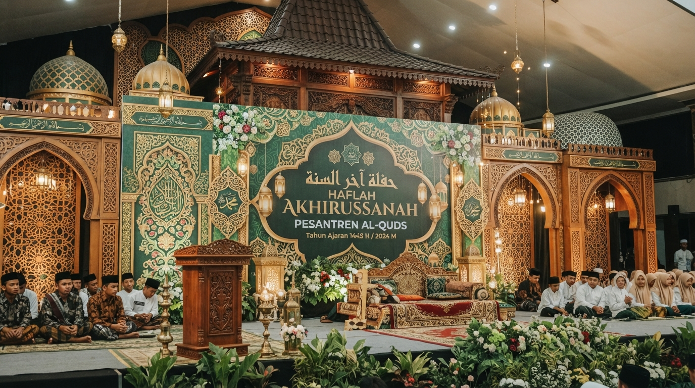
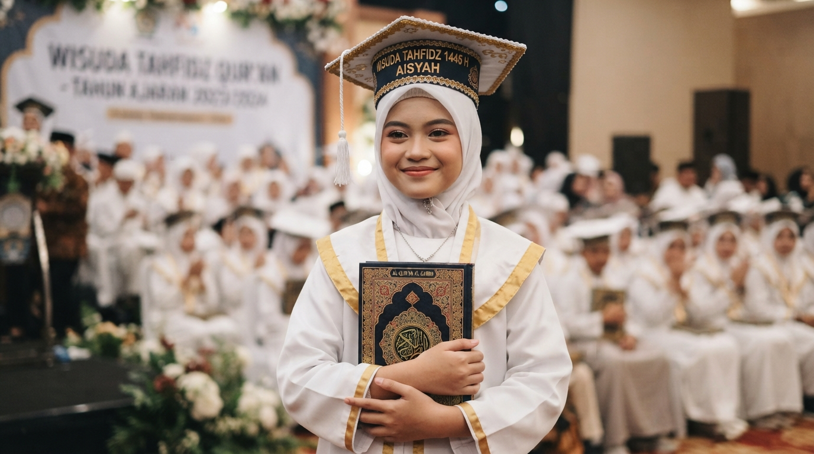
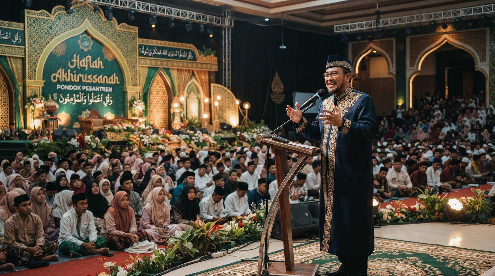

Rangkaian Kegiatan
- Pembukaan dan Tilawah Al-Qur'an.
- Sambutan Pengasuh Pesantren.
- Wisuda Tahfidz Al-Qur'an.
- Penampilan Hadrah dan Nasyid.
- Drama Islami.
- Pemberian Penghargaan Santri Berprestasi.
- Tausiyah Akbar.
- Doa Penutup.
Haflah Akhirussanah 2026 • Mencetak Generasi Qur'ani yang Berilmu, Berakhlak, dan Berprestasi

Haflah Akhirussanah merupakan acara tahunan yang diselenggarakan oleh Pesantren Al-Quds sebagai bentuk rasa syukur atas keberhasilan para santri dalam menyelesaikan proses belajar. Acara ini menjadi momentum untuk mempererat ukhuwah Islamiyah, menampilkan berbagai prestasi santri, serta memperkuat semangat dalam menuntut ilmu.
Kegiatan ini menghadirkan berbagai penampilan menarik seperti tilawah Al-Qur'an, pidato tiga bahasa, hadrah, drama islami, pembagian penghargaan santri berprestasi, hingga tausiyah inspiratif dari ustadz tamu.
Tanggal : Sabtu, 25 Juli 2026
Waktu : 07.30 WIB – Selesai
Tempat : Aula Utama Pesantren Al-Quds



Untuk mengetahui profil acara secara lengkap, jadwal kegiatan, dan melakukan pendaftaran, silakan menuju halaman berikut.